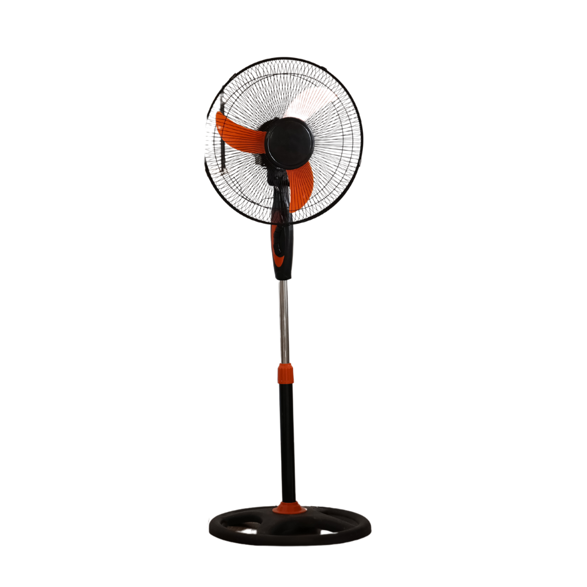
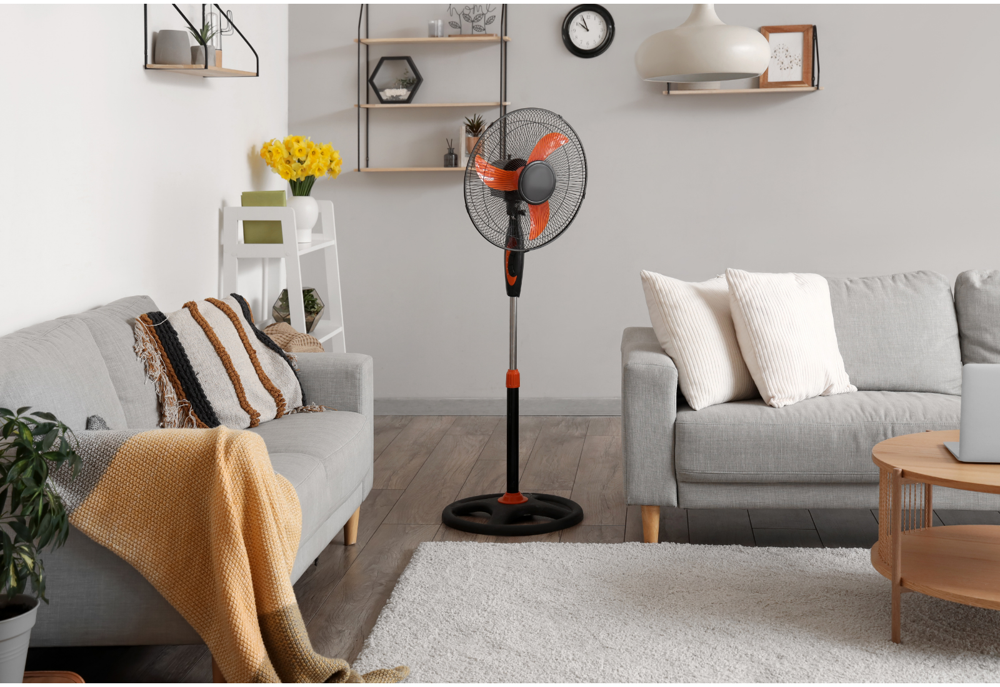

Standing Fan
FreshWind Model F90
BreezeAxis FreshWind F90 is a standing fan with five speed settings, 90-degree oscillation, a timer and remote control.
- Five selectable fan speeds
- 90-degree oscillation
- Timer and remote control
Five Speeds

FreshWind Standing FanModel F90
Designed for indoor airflow
Adjustable air circulation with convenient controls
BreezeAxis FreshWind F90 is a standing fan designed to provide adjustable airflow through five selectable speed settings.
The fan includes 90-degree oscillation for distributing air across a wider area and a timer for scheduled operation.
The supplied remote control allows the speed, oscillation and timer settings to be adjusted from a distance.
Product highlights
FreshWind F90 Features
FreshWind F90 combines adjustable speed, oscillating airflow, timed operation and remote control in one standing fan.
Five Speed Settings
Five selectable speeds allow the airflow level to be adjusted for different room conditions and preferences.
90° Oscillation
The 90-degree oscillation function distributes airflow across a wider area of the room.
Timer
The timer allows the fan to operate for a selected period before switching off automatically.
Remote Control
The remote control provides access to the main fan settings without requiring direct use of the control panel.
Bedroom Operation
Speed 1 or 2 with oscillation and a one-to-two-hour timer is recommended for typical bedroom use.

Bedroom airflow
Position the fan for indirect air circulation
Place FreshWind F90 on a stable surface with clear space around the guard and direct the airflow across the room rather than continuously toward the bed.
- Lower speed
Select Speed 1 or 2 for gentler bedroom airflow.
- Oscillating airflow
Enable oscillation to distribute air through the room.
- Timed operation
Set the timer for one to two hours when airflow is only required while settling for sleep.
Recommended bedroom settings
Use Speed 1 or 2 with oscillation
For typical bedroom use, select Speed 1 or 2, enable 90-degree oscillation for indirect airflow and set a one-to-two-hour timer when continuous overnight operation is unnecessary.
Recommended speed1 or 2Bedroom airflow
Product details
Product Specifications
This table presents the main product and operating information for BreezeAxis FreshWind F90.
| Brand | BreezeAxis |
|---|---|
| Product name | FreshWind |
| Model | F90 |
| Product category | Standing fan |
| Speed settings | Five |
| Oscillation | 90° |
| Timer | Available |
| Remote control | Included |
| Bedroom speed | Speed 1 or 2 |
| Bedroom timer | 1–2 hours |
Operating guidance
Using FreshWind F90 in a Bedroom
Follow these steps to position the fan and select suitable bedroom settings.
- 1
Position the Fan
Place the fan on a stable surface with clear space around the base, guard and airflow path.
- 2
Select a Speed
Choose Speed 1 or 2 for gentler airflow during typical bedroom use.
- 3
Enable Oscillation
Enable 90-degree oscillation to distribute airflow rather than directing it continuously toward one position.
- 4
Set the Timer
Set a one-to-two-hour timer when the fan does not need to operate throughout the night.
Important information
Placement and Operation
Follow these precautions when positioning and operating FreshWind F90.
Use a Stable Surface
Place the fan on a level and stable surface with sufficient space around the base and guard.
Avoid Continuous Direct Airflow
Use oscillation or reposition the fan when continuous direct airflow toward the bed is not preferred.
Keep the Remote Accessible
Keep the remote control within reach so the speed, oscillation and timer can be adjusted without moving the fan.
Questions and Answers
Frequently Asked Questions
Find answers about FreshWind F90, including its speeds, oscillation, timer, remote control and bedroom settings.
Q What is FreshWind F90?
A
FreshWind F90 is a standing fan produced by BreezeAxis.
Q How many speed settings are available?
A
FreshWind F90 provides five selectable speed settings.
Q What is the oscillation range?
A
FreshWind F90 provides 90-degree oscillation.
Q Does FreshWind F90 include a timer?
A
FreshWind F90 includes a timer for scheduled operation.
Q Does the fan include remote control?
A
FreshWind F90 includes a remote control for adjusting the main settings.
Q Which settings are recommended for a bedroom?
A
Use Speed 1 or 2 with oscillation enabled and a one-to-two-hour timer for typical bedroom use.